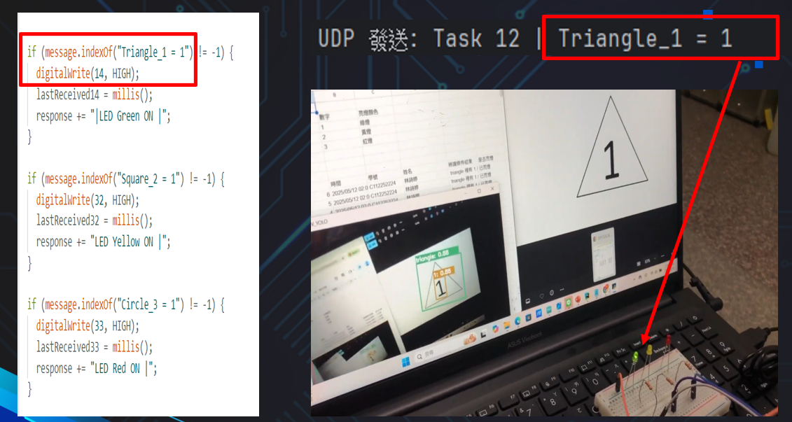
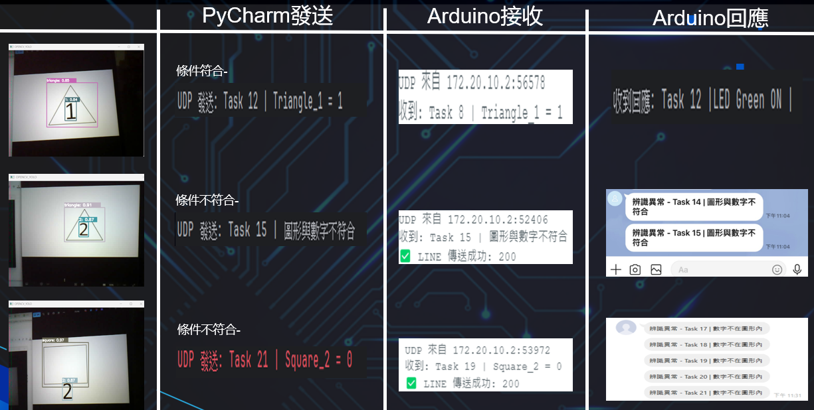
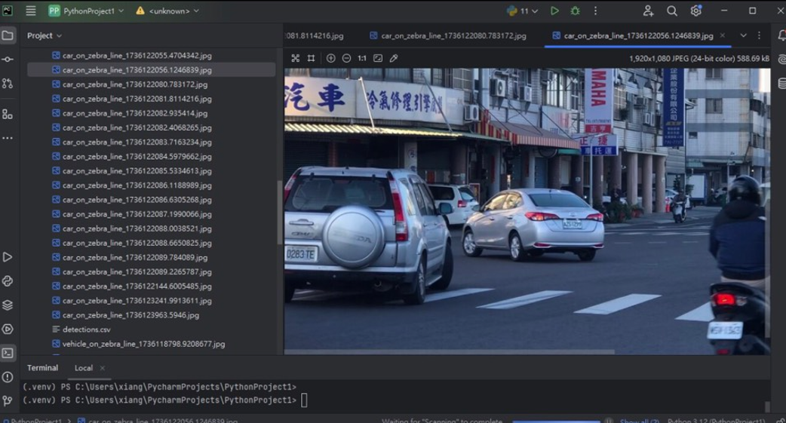
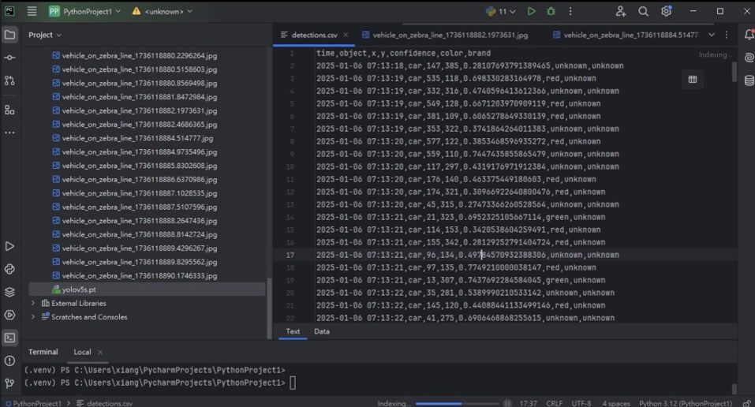
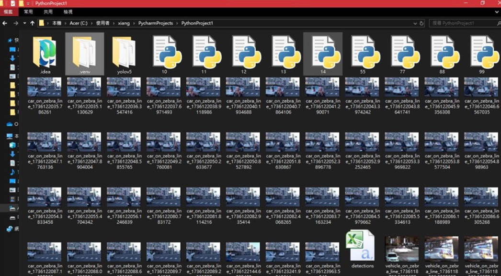
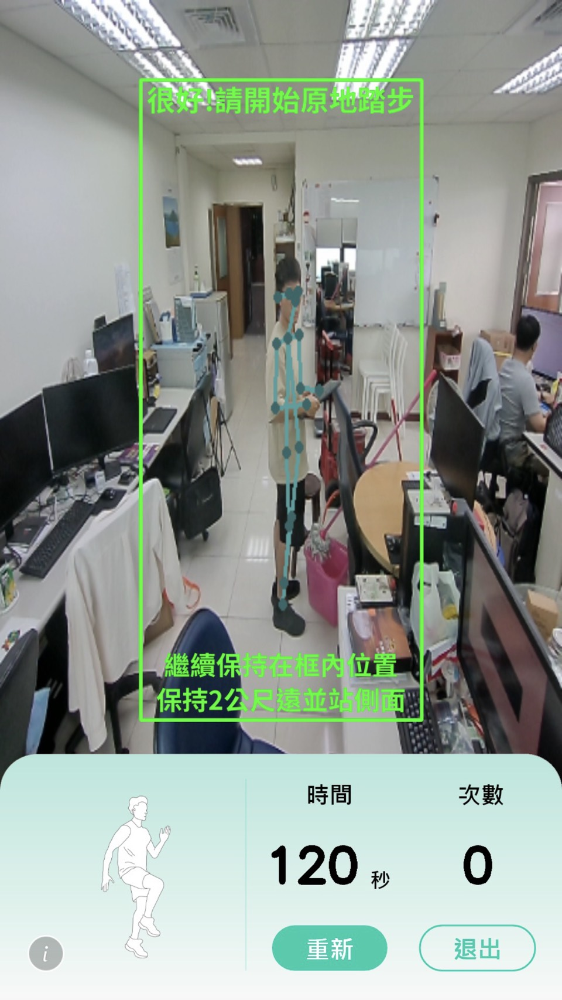
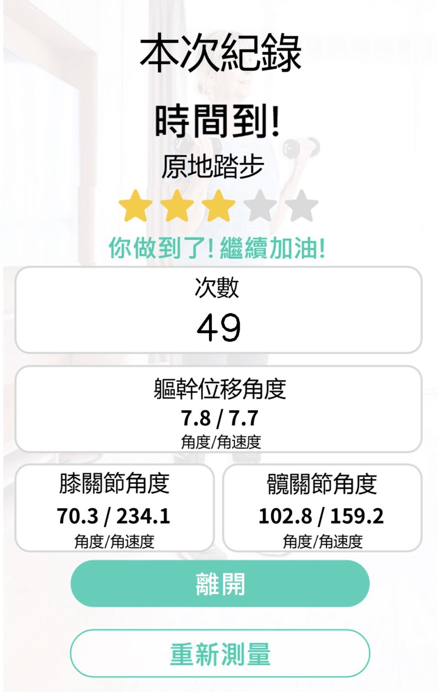
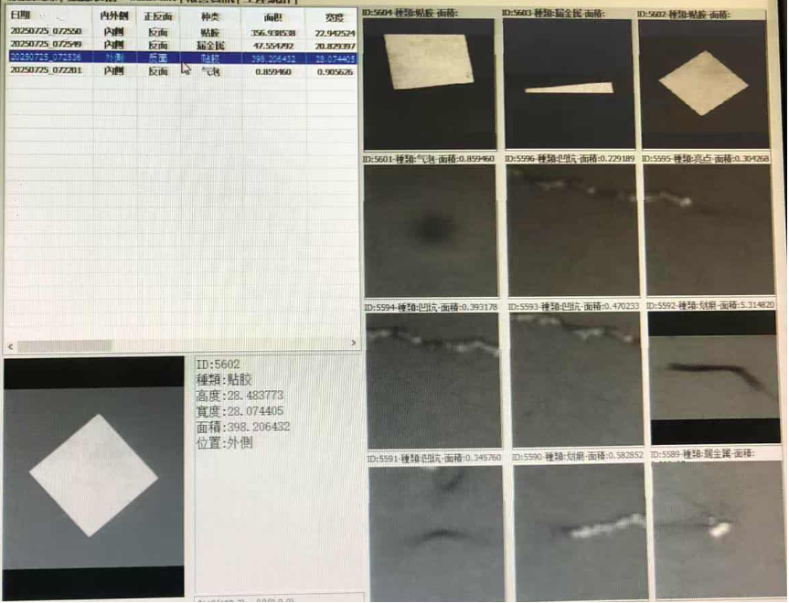
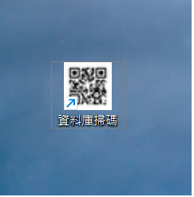
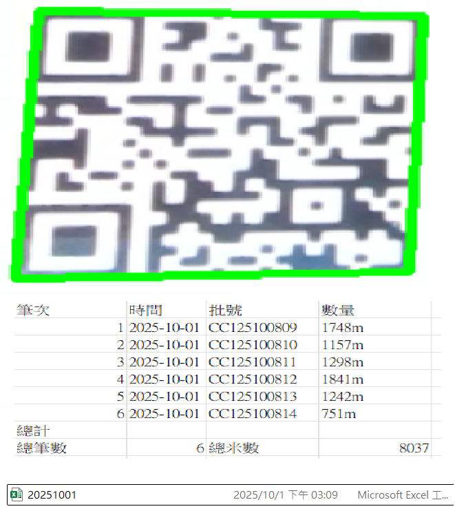

探索科技、健康與遠端控制的世界
Hello！我是林詩婷。我正在學習網頁開發，這個網站就是我的練習作品！
這裡未來會整合我的 IoT 專案，透過網頁來控制設備。
這裡記錄我的血壓參考差異。健康生活，快樂每一天！
| 姓名 | 林詩婷 |
| 班級 | 進四技電子三乙 |
| 學號 | C112252224 |
| 職業 | 能源產業/生技設備 |
| 專案經驗 | 影像辨識 |
| 專案作品 |
📚 學校作品：
1.影像識別數字與圖形對應亮燈,並建立資料庫   2.違停斑馬線超時即時拍照並識別車牌、建立資料庫    3.各項體適能骨架辨識計算次數   💼 工作專案： 1.相機瑕疵檢測  2.飛掃相機QR Code 識別掃描讀取資料   |
| 興趣 | 程式設計、運動 |
| 聯絡方式 | Email: C112252224@nkust.edu.tw |
| 自我介紹 | 大家好，我是林詩婷，目前一邊上班一邊進修，努力在學業與工作之間取得平衡。我專注於影像辨識與程式設計領域，特別喜歡把自己的想法透過程式轉化為實際作品。在每一個專案中，我都非常重視細節與品質，也樂於從錯誤中學習、持續改進。我喜歡挑戰新的技術，嘗試不同的開發方向，例如人工智慧應用、影像處理與自動化系統。在課業之外，我也積極參與實作與專題，期望能將學到的知識應用在真實的問題解決上。未來，我希望能在大學畢業前考取多張專業證照，不斷提升自己。 |
這裡可以放血壓或運動相關資訊。